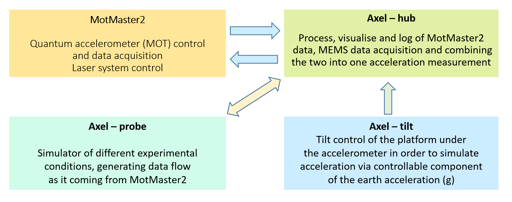

Axel Suite software
Axel Suite is a set of applications which together with MotMaster2 are the software for Navigator project, developed in Centre for Cold Matter, Imperial College, London, UK.
Last year our Navigator group , we demonstrated UK’s first quantum accelerometer which uses cold Rubidium-87 atoms for the precise measurement of acceleration. Our cold atoms are prepared in a magneto-optical trap (MOT), cooled down to a few microkelvin. This serves as the quantum source for our Mach-Zehnder interferometer where we use highly precise laser pulses to interact with the atoms. Any acceleration which effects the device during the interferometric process gets recorded and read out with a maximum measurement bandwidth of 10 Hz. A large dynamic range of operation can be achieved by combining the low drift signal of the atom interferometer with the higher dynamic measurement of a conventional MEMS accelerometer [1]. We have reached a horizontal acceleration sensitivity of 4 μg (1g = 9.8 m/s2) in 1 sec of measurement integration time.
The two major applications -
MotMaster2 and Axel-hub, control and collect data from Navigator experiment.
Another two applications - Axel-probe and Axel-tilt are designed to simulate in
a different way acceleration conditions.
The arrows indicate communication channels between applications using fast Windows messaging.

System requirements:
All software has been written in Microsoft Visual C# 2013 with WPF visual components using Visual Studio 2013 development environment.
National Instruments Measurement Studio 2015 (scientific and graphical library - WPF edition) has been extensively used.
The software has been used under Microsoft Windows 7 and Windows 10 operating systems.